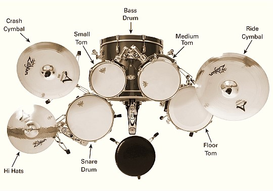
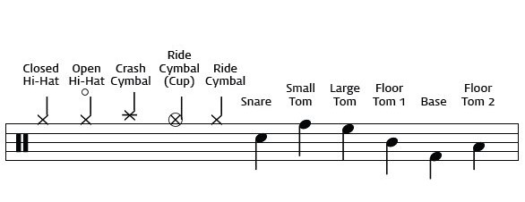

Drum
Drum의 구성

드럼: 주가 되는 드럼은 Snare Drum과 Bass Drum이며 여러 필인을 넣을 때 Tom드럼들이 사용된다.
Snare Drum,
Bass Drum,
Small Tom,
Medium Tom,
Floor Tom
심벌: 기본 박자를 Hi Hats 심벌로 치며 다른 심벌들은 곡의 음이 커질 때 이용되며 필인에 추가된다.
Hi Hats,
Crash Cymbal,
Ride Cymbal
스틱: 스틱은 보통 5A의 채를 쓴다.
Drum을 치기 위해 필요한 것
박자감: 드럼은 음악에서 가장 중요한 박자를 책임지고 있는 악기이므로 박자를 빠르고 느리고를 잘 하지 못해주면 음악 전체에 피해를 주게 된다. 그러므로 박자감이 좋아야 드럼을 치기에 편할 것이다.
보통 박자감 연습은 메트로놈으로 연습하는 것이 가장 실력이 잘 는다.
체력: 드럼이 힘 좋은 사람은 어느 정도 가볍게 칠 수도 있지만 힘이 그다지 좋지 않은 사람들은 게속된 움직임으로 통증이 온다. 어느 정도의 체력은 되야 좀 더 드럼에 집중 할 수 있을 것이다.
드럼 악보 보는 법
밑의 음표가 드럼 악보에 쓰이는 악보의 음표를 바로 보고 하는 것이 어렵기 때문에 익숙해질 필요가 있다.

드럼은 누구나 배울 수 있고 익숙해지기만 하면 쉽게 칠 수 있다. 하지만 연습을 꾸준히 안한다면 실력은 늘지 않을 것이다.